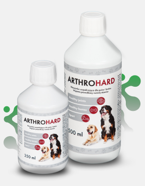
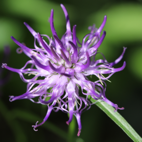
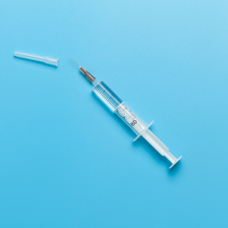
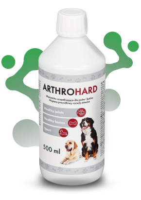
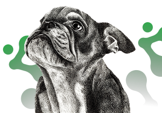

Lab-V Arthrohard Preparat
na wsparcie stawów dla psa i kota
Arthrohard to dobrze przyswajalny suplement diety w formie syropu,
stworzony z myślą o zdrowiu stawów Twojego psa lub kota.
Zapewnia dodatkowe wsparcie w zwalczaniu stanów bólowych i
zapalnych. Skoncentrowane składniki aktywne, opracowane we
współpracy z lekarzami weterynarii, przynoszą szybkie i zauważalne
efekty, szczególnie korzystne dla zwierząt z poważnymi problemami
stawowymi.

Skuteczność - skoncentrowana dawka
Tylko jedna porcja dziennie. To nie tylko wygoda, ale również
gwarancja, że Twoje zwierzę otrzymuje wszystko, czego potrzebuje,
aby cieszyć się zdrowiem i aktywnością na długo. Skorzystaj z zalet
Arthrohard i zobacz różnicę w komforcie życia swojego zwierzęcia.

Co dają poszczególne składniki:

Siarczan glukozaminy
650 mg
Glukozamina jest naturalnym składnikiem chrząstki. Dodatek
glukozaminy przyczynia się do zwiększenia produkcji
glikozaminoglikanów (m.in. siarczanu keratanu, heparanu, kwasu
hialuronowego), które pomagają w odbudowie chrząstki, co jest
szczególnie korzystne dla zwierząt ze zmianami zwyrodnieniowymi
stawów.

Czarci pazur
250 mg
Czarci pazur jest rośliną, która ma właściwości przeciwzapalne i
przeciwbólowe. Może to pomóc zwierzętom, które doświadczają bólu i
stanu zapalnego związanego z problemami ze stawami.
Siarczan chondroityny
300 mg
Chondroityna, podobnie jak glukozamina, jest składnikiem
chrząstki. Chondroityna pomaga zwalczać enzymy, które niszczą
chrząstkę, a także pomaga chrząstce zatrzymać wodę, co jest ważne
dla jej sprężystości i absorpcji wstrząsów.
Witamina C
50 mg
Witamina C jest potężnym przeciwutleniaczem, który może pomóc w
ochronie stawów poprzez neutralizację wolnych rodników, które mogą
uszkadzać chrząstkę. Ponadto, witamina C odgrywa ważną rolę w
produkcji kolagenu, kluczowego składnika chrząstki.

MSM
250 mg
Metylosulfonylometan, czyli MSM, to naturalny związek siarki,
który pomaga w utrzymaniu zdrowych stawów poprzez zmniejszenie
stanu zapalnego i bólu. MSM może również pomagać w produkcji
kolagenu, co przyczynia się do zdrowia chrząstki stawowej.

Syrop glukozowo - fruktozowy
250 mg

